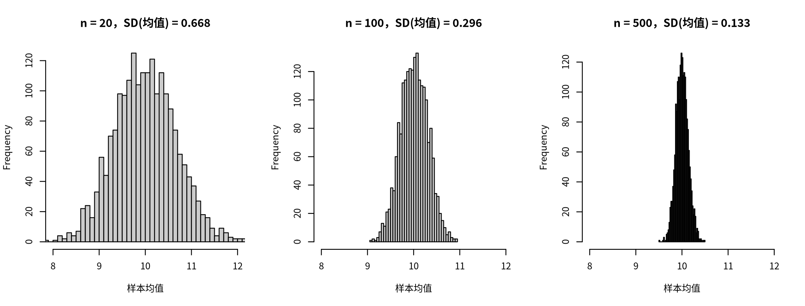

抽样、标准误与置信区间
本课学习目标
- 区分总体与样本、参数与统计量
- 用模拟直觉理解抽样分布与标准误
- 正确解释 95% 置信区间（以及常见的错误解释）
核心概念
- 总体population
- 样本sample
- 参数parameter
- 统计量statistic
- 抽样分布sampling distribution
- 标准误standard error, SE
- 置信区间confidence interval, CI
- 样本量sample size
本课结构：直觉 → 最少数学 → R 代码 → 理解检查 → 练习 → 小结。文中的交互图示可拖动或点击；测验答错会先给提示，答错两次可查看解析。
① 直觉只调查了 100 个人，能说全市怎样吗？
区民政局想知道全区 10 万名成年居民的平均孤独感。不可能人人都问，于是社工站随机抽了 100 位居民，算出平均孤独分 9.78。局长问：“全区的真实平均就是 9.78 吗？如果换另外 100 个人，会不会得到完全不同的数字？我们对这个数字有多大把握？”这节课回答的就是“把握有多大”。
总体与样本、参数与统计量
- 总体（population）：我们真正关心的全部对象（全区 10 万名成年居民）。
- 样本（sample）：实际调查到的那一部分（100 位）。
- 参数（parameter）：描述总体的数字，通常未知，用希腊字母表示，如总体均值 \(\mu\)、总体标准差 \(\sigma\)。
- 统计量（statistic）：用样本算出来的数字，如样本均值 \(\bar x\)。我们用统计量去估计参数。
厨师尝一勺汤判断整锅咸淡。整锅汤 = 总体；一勺 = 样本；“整锅的咸度” = 参数；“这一勺的咸度” = 统计量。只要汤搅匀了（随机抽样），一勺就能代表整锅；勺子越大（样本越大），判断越可靠。但无论勺子多大，每一勺的味道都会有一点点不同。本课讲的就是这种“勺与勺之间的差异”。
抽样分布：如果研究能重做 1000 次
想象一个思想实验：同样的研究重复做很多次，每次随机抽 \(n\) 个人，每次算一个均值。这许多个均值本身也构成一个分布，叫抽样分布（sampling distribution）。在现实中我们只做一次研究，但这个想象中的分布告诉我们：一次研究得到的数字，大概会离真值多远。
请做三件事：(1) 选 n = 20，点“抽 1000 个样本”，观察下方蓝色直方图有多宽；(2) 换成 n = 100、n = 500 重复；(3) 注意上方的总体是右偏的，但样本均值的分布却越来越像对称的钟形，这就是中心极限定理（central limit theorem）：只要总体的方差有限，样本量足够大时，样本均值的分布就近似正态，不管原始数据长什么样。“足够大”是多大，取决于总体有多偏：总体接近对称时 n = 20 左右已经很接近正态；像本页这样右偏的总体，n = 20 时的直方图还能看出一点右拖尾；偏态更重（例如大部分人 0 分、极少数人极高分的计数变量）时，需要的 n 还要更大。如果总体有极端的“厚尾”，方差根本不存在，定理就不适用。
为了演示，本页用了几个不同的假想总体，它们彼此独立，数字不能互相比较：
- 开头的故事：全区 10 万名成年居民，孤独总分是课程量表的 4–16 分。
- 上面的“虚拟城市”组件：2 万名居民，一个虚构的 20–80 分孤独量表，故意做成右偏，用来展示中心极限定理；它的 μ 和 σ 标在图的上方。
- 下面的置信区间组件：同样是虚构量表，真值设为 μ = 50。
- ③ R 代码里的
city：10 万居民，正态分布，μ = 10、σ = 3，接近课程孤独总分的尺度。
它们讲的是同一个道理：总体固定不变，样本每次不同，样本统计量围绕参数波动，波动的大小由 SD 和 n 决定。
你会发现两条规律：
- 样本均值的分布以真值 \(\mu\) 为中心：平均而言，样本均值不偏不倚。
- 样本越大，分布越窄。但不是“样本大 5 倍，宽度缩小 5 倍”，而是缩小 \(\sqrt5 \approx 2.2\) 倍。
抽样分布的标准差有一个专门的名字：标准误（standard error, SE）。它衡量的是“估计值在重复研究之间的波动”，而标准差（SD）衡量的是“个人与个人之间的差异”。
| 标准差 SD | 标准误 SE | |
|---|---|---|
| 描述谁的变异 | 个体之间的分数 | 估计值（如均值、回归系数）在重复抽样中的波动 |
| 样本变大时 | 基本不变（人与人的差异是客观存在的） | 变小（估计更精确） |
| 例 | 居民孤独分的 SD ≈ 3：居民之间差得挺多 | n = 100 时均值的 SE ≈ 0.3：我们对平均数的估计相当精确 |
置信区间：给估计值加上“误差范围”
与其只报告一个数 9.78，不如报告一个范围：[9.16, 10.41]。这就是 95% 置信区间（confidence interval, CI）。它是怎么来的、该怎么理解？看下面的模拟：50 位研究者各自独立做了一次调查，每人都算出一个 95% CI。
大多数区间（紫色）穿过了绿色的真值线，少数（红色）没有。长期来看，约 95% 的区间会包含真值。“95%”描述的是构造区间的方法有多可靠，而不是某一个具体区间。
- 正确：“如果用同样的方法反复抽样、反复计算，约 95% 的这类区间会包含总体均值。”简化的报告说法：“总体均值的 95% 置信区间为 [9.16, 10.41]。”
- 错误：“总体均值有 95% 的概率落在 [9.16, 10.41] 里。”（在这种统计框架下，真值是固定的，某一个具体区间要么包含它，要么不包含。）
- 错误：“95% 的居民孤独分在 [9.16, 10.41] 之间。”（CI 是关于均值的，不是关于个人的；个人分数的范围要看 SD。）
为什么网络分析需要较大的样本量（sample size）？
CLPN 一次要估计几十个系数（9 道题就有 81 个），每个系数都有自己的标准误。样本小时，每个系数都在真值周围大幅“跳动”，网络图会因为随机误差而出现许多“假边”、漏掉“真边”。所以模块 8 要用 bootstrap 检查边和中心性的稳定性。bootstrap 用的就是本课的“重做研究”思想实验：既然不能真的重做 1000 次研究，就从手头的样本中有放回地“重抽”1000 次，模拟抽样分布。
② 最少数学\(\sqrt{n}\) 从哪里来
- \(\sigma\)
- 总体标准差（未知时用样本标准差 \(s\) 代替）。
- \(n\)
- 样本量。
- \(1.96\)
- 标准正态分布中，中间 95% 面积的边界（±1.96 个标准差，上一课的“约 ±2”的精确版）。
为什么是 \(\sqrt n\)？
均值 \(\bar x = (x_1+\cdots+x_n)/n\)。如果每个人是独立抽取的，有一条规则：独立变量之和的方差等于方差之和。所以 \(x_1+\cdots+x_n\) 的方差是 \(n\sigma^2\)。再除以 \(n\)：一个数除以 \(n\)，它的方差要除以 \(n^2\)（因为方差是“平方”单位）。于是
直觉：多个人的随机误差会部分相互抵消（有人偏高、有人偏低），但抵消得不完全，所以误差只按 \(\sqrt n\) 缩小。实务含义：想把误差减半，样本要扩大 4 倍。
手算
\(\sigma = 3\)：n = 20 时 SE = 3/√20 ≈ 0.671；n = 100 时 SE = 0.3；n = 500 时 SE ≈ 0.134。一个 n = 100 的样本均值 9.78、SD 约 3.2 时，SE ≈ 0.32，95% CI ≈ 9.78 ± 1.96 × 0.32 ≈ [9.16, 10.41]。
（严格地说，用样本 SD 代替 σ 时应该用 t 分布的临界值代替 1.96；n = 100 时 t 临界值约为 1.98，区间稍宽一点点。t.test() 用的就是 t 分布。）
③ R 代码“虚拟城市”抽样模拟
对应脚本：R/L1-5.R。R 也可以做上面的思想实验：先生成一个 10 万人的“虚拟城市”（我们知道真值），再反复抽样。
source("R/_setup.R")
set.seed(2026) # 随机种子：让结果可复现（2.2 课）
city <- rnorm(100000, mean = 10, sd = 3) # 总体：10 万居民的孤独分，μ = 10，σ = 3
for (n in c(20, 100, 500)) {
means <- replicate(2000, mean(sample(city, n))) # 抽 2000 次样本，每次算均值 → 抽样分布
cat("n =", n, "：抽样分布的标准差 =", round(sd(means), 3),
"；理论标准误 SE = σ/√n =", round(3 / sqrt(n), 3), "\n")
}
s <- sample(city, 100) # 现实中：只有一个样本
se <- sd(s) / sqrt(100)
cat("\n一个 n=100 样本：均值", round(mean(s), 2), " 95% CI = [",
round(mean(s) - 1.96 * se, 2), ",", round(mean(s) + 1.96 * se, 2), "]\n")
t.test(s)$conf.int # 用 t 分布的精确版本n = 20 ：抽样分布的标准差 = 0.668 ；理论标准误 SE = σ/√n = 0.671
n = 100 ：抽样分布的标准差 = 0.296 ；理论标准误 SE = σ/√n = 0.3
n = 500 ：抽样分布的标准差 = 0.133 ；理论标准误 SE = σ/√n = 0.134
一个 n=100 样本：均值 9.78 95% CI = [ 9.16 , 10.41 ]
[1] 9.148005 10.415970
attr(,"conf.level")
[1] 0.95
新函数：
rnorm(N, mean, sd)：生成 N 个正态分布的随机数。sample(city, n)：从 city 中不放回地随机抽 n 个。（8.1 课的 bootstrap 要有放回地抽：sample(x, replace = TRUE)。）replicate(2000, …)：把括号里的事情重复做 2000 次，收集结果。set.seed(2026)：随机数其实是由一个“种子”决定的伪随机序列；设定种子后，每次运行得到完全相同的结果。CLPN 的交叉验证也有随机性，所以一定要设种子（7.2 课）。
模拟的标准差（0.668、0.296、0.133）与公式（0.671、0.3、0.134）几乎一样。
完整例题：样本量翻 4 倍，区间只窄一半
某社区随机抽取 n = 100 位居民，孤独总分均值 9.0、SD = 3.0。
- 标准误 SE = SD / √n = 3.0 / 10 = 0.30。
- 95% 置信区间 ≈ 均值 ± 1.96 × SE = 9.0 ± 0.588 = [8.41, 9.59]。
- 如果抽 n = 400：SE = 3.0 / 20 = 0.15，区间 = 9.0 ± 0.294 = [8.71, 9.29]，宽度正好减半。
结论：想把区间宽度减半，样本量要变成原来的 4 倍，因为宽度与 √n 成反比。规划调查预算时要考虑这一点。
- 以为样本越大越能消除偏差。SE 只反映随机误差。如果样本是在活动中心门口方便招募的，最孤独、不出门的居民本来就抽不到，n 再大也只是“精确地估错”。
- 用“两个区间是否重叠”来判断差异是否显著。两个 95% 区间略有重叠，差异仍可能显著。比较两组要直接检验差值（1.6 课）。
- 用 SD 代替 SE 画误差线。两者差 √n 倍。图注里必须写明误差线是 SD、SE 还是 95% CI。
这和 CLPN 有什么关系？
后面第 8 模块要给网络中的每条边算置信区间。思路和这里完全一样：一条边的估计值就像这里的样本均值，换一批人会有所不同；区间越窄，这条边越可信。区别只在于，边的标准误没有 SD/√n 这样的现成公式，所以要用 bootstrap 去“模拟重新抽样”（8.1 课）。
④ 理解检查即时测验
标准误（SE）和标准差（SD）有什么不同？
- 它们描述的是两种不同的变异：一个是人与人之间，一个是估计值在重复抽样之间。
- 正确。
- 均值的 SE = SD / √n，n > 1 时 SE 更小。
- 样本变大时变小的是 SE。
总体 SD = 12，样本量 n = 36。样本均值的标准误是多少？
想把均值的标准误缩小一半，样本量需要变为原来的几倍？
- SE 与 √n 成反比，不是与 n 成反比。
- 正确：√4 = 2。
- √8 ≈ 2.83，SE 会缩小到原来的约 1/2.83，比一半还小。
- 样本变小只会让误差更大（SE 变为原来的 √2 ≈ 1.41 倍）。
某研究报告：孤独与抑郁相关的 95% CI 为 [0.10, 0.30]。正确的解读是？
- 这是本课点名的误读：总体相关是固定的，这个具体区间要么包含它、要么不包含；“95%”说的是方法的长期覆盖率。
- 相关是整个样本的统计量，不是每个人一个。
- 正确。
- 样本相关是算出来的已知值，没有“概率”可言；区间描述的是总体相关的不确定性。
这节课的“重复抽样”思想与模块 8 的 bootstrap 有什么联系？
- 正确。
- bootstrap 不收集新数据，只从手头这一个样本中有放回地重抽。
- 重抽只能模拟随机误差；样本本身有偏（如方便招募）时，bootstrap 无法纠正（8.1 课）。
根据中心极限定理，当 n 较大时，右偏总体的样本均值的分布会是什么样？
- 单个样本的分数确实右偏，但这里问的是“样本均值”的分布；模拟中下方蓝色直方图随 n 增大越来越对称。
- 正确：这是中心极限定理的核心结论。
- 求均值不会翻转分布方向。
- 中心极限定理正是说：只要总体方差有限，n 足够大时样本均值就近似正态，不要求总体本身正态。
⑤ 练习动手练习
练习 1.5-A：互动模拟报告
用本页的“虚拟城市”模拟，分别在 n = 20 / 100 / 500 下各抽 1000 个样本，记录读数框中“样本均值的标准差（实测）”与“理论标准误”。写 3 句话说明：这和“网络分析需要较大样本”有什么关系？
参考要点
本页总体的 σ = 10.27（图的上方标出），所以理论 SE = 10.27/√20 ≈ 2.30、10.27/√100 ≈ 1.03、10.27/√500 ≈ 0.46，与读数框一致（实测值会非常接近）。三句话示例：(1) 样本越小，同一个估计值在不同样本之间波动越大；(2) CLPN 同时估计几十个系数，每个都会这样波动，小样本下网络结构可能主要反映随机噪音；(3) 因此网络分析需要较大样本，并且要用 bootstrap（模块 8）检查结果的稳定性。
练习 1.5-B：手算置信区间
一个社区随机调查了 64 位居民，孤独总分均值 9.2，SD 3.2。先指出本题中的总体、样本、参数和统计量各是什么；再计算均值的 SE 和 95% CI（用 1.96），并写出一句规范的报告语句。
参考答案
总体 = 这个社区的全体居民；样本 = 被调查的 64 位；参数 = 全社区居民的平均孤独总分 μ（未知）；统计量 = 样本均值 9.2（和样本 SD 3.2）。
SE = 3.2 / √64 = 3.2 / 8 = 0.4；95% CI = 9.2 ± 1.96 × 0.4 = 9.2 ± 0.78 = [8.42, 9.98]。报告：“样本的平均孤独总分为 9.20（SD = 3.20），总体均值的 95% 置信区间为 [8.42, 9.98]。”
练习 1.5-C：R 动手
运行 R/L1-5.R，然后改一处：把 set.seed(2026) 改成 set.seed(1) 重跑，结果变了吗？哪些变了，哪些规律没变？再删掉 set.seed() 那一行运行两次，比较结果。
要点
换种子后具体数字（例如那个 n = 100 样本的均值和 CI）会变，但规律不变：模拟 SD 仍然接近 σ/√n，n 越大越窄。删掉 set.seed 后每次运行结果都不同。所以做分析时要固定并报告随机种子（9.3 课的报告规范）。
小结带走三句话
- 统计量（样本）用来估计参数（总体）；估计值在重复抽样中的波动叫标准误，SE = SD / √n。
- 95% CI ≈ 估计值 ± 1.96 × SE；“95%”说的是方法的长期覆盖率，不是某个区间的概率。
- “重做研究”的思想实验是 bootstrap 的基础；样本越大，网络估计越稳定。下一课：1.6 假设检验、p 值与效应量。
CLPN 从零开始 · 第 1.5 课 · 返回大纲